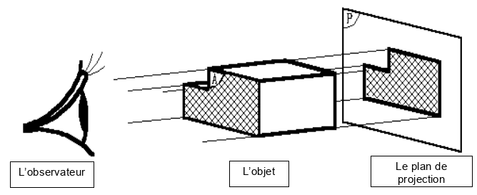
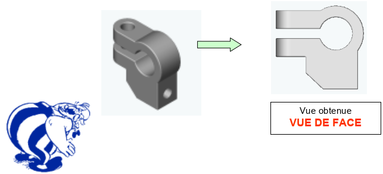
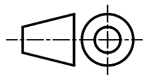
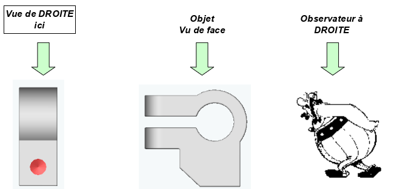
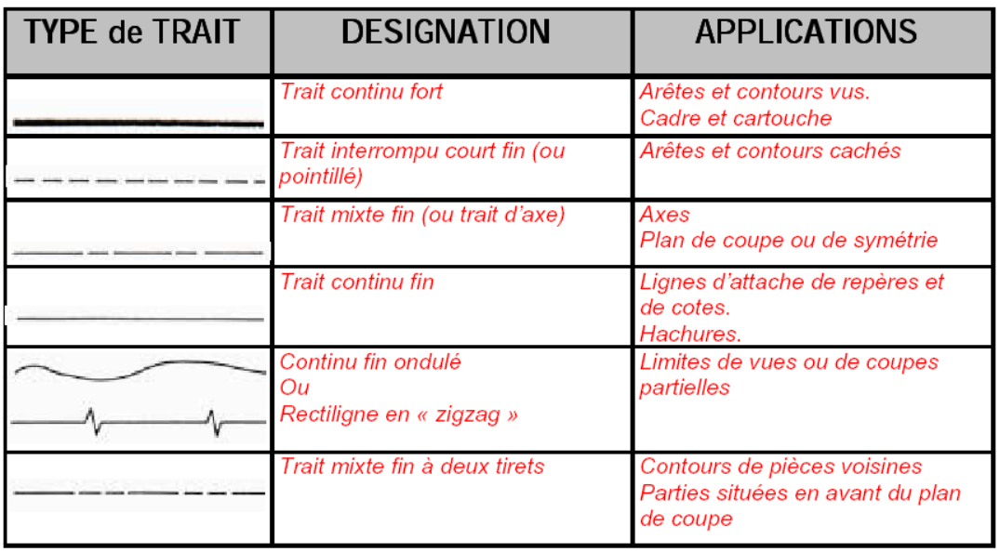

Principe
La vue d’un objet dépend de la position de l’observateur par rapport à l’objet à représenter.
Nous sommes toujours en présence de trois éléments :
L’observateur, l’objet et le plan sur lequel on projette l’objet.

Projection
Très souvent une seule vue n’est pas suffisante pour définir un objet.
Pour exécuter d’autres vues, l’observateur se déplace autour de l’objet en respectant les règles d’obtention des vues.
Afin de distinguer les différentes vues, le nom d’une vue est celui de la position de l’observateur correspondante

Positions des vues
Il suffit d’appliquer la méthode Européenne


L’observateur est placé à droite de l’objet, on observe la vue de droite et on la place à gauche de la vue de face.
Significations des différents types de traits
